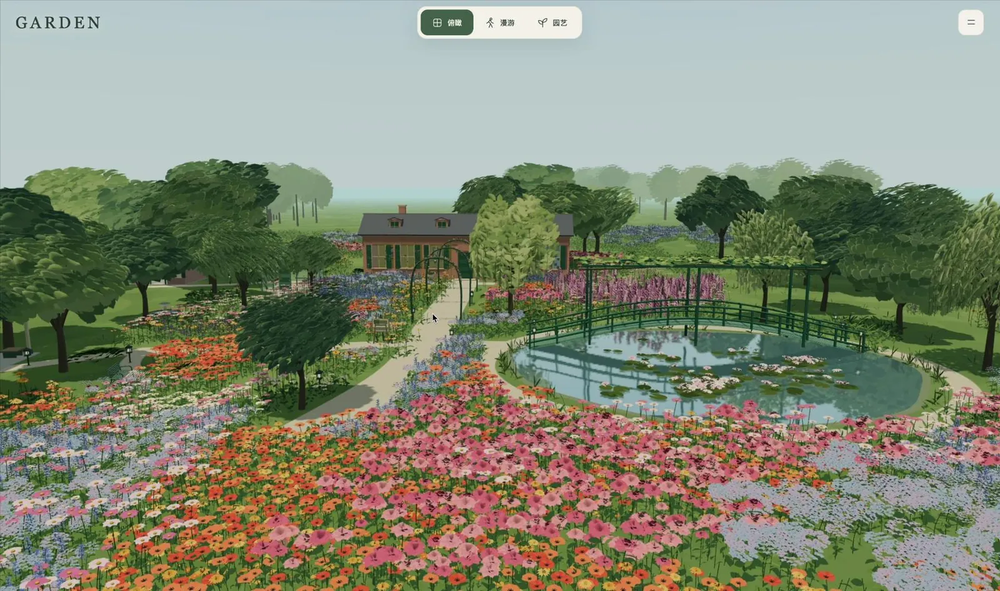

PROJECT NOTES / 2026.09
GARDEN
A painterly Giverny-inspired garden to wander, plant, and watch through a year

GARDEN is a painterly 3D garden inspired by Giverny and the colors Monet planted there. Look down on it from above, then switch to walking: click the path and stroll past the flower beds, cross the green bridge over the water lilies, and step inside the pink house to see the dining room, the kitchen and the studio.
A date slider runs through the whole year. Twenty kinds of flowers open and fade on a Giverny-style bloom calendar, trees leaf out and shed one leaf at a time, and the light moves from 05:00 to 22:00. When winter comes, snow settles on the ground and the roofs.
It is also a garden you can plant. Scatter single flowers, clumps or whole borders, lay gravel paths, add benches and bridges, then sit down on them yourself. The garden saves in your browser and can take a clean photo without the interface, with wind and birdsong if you turn the sound on.